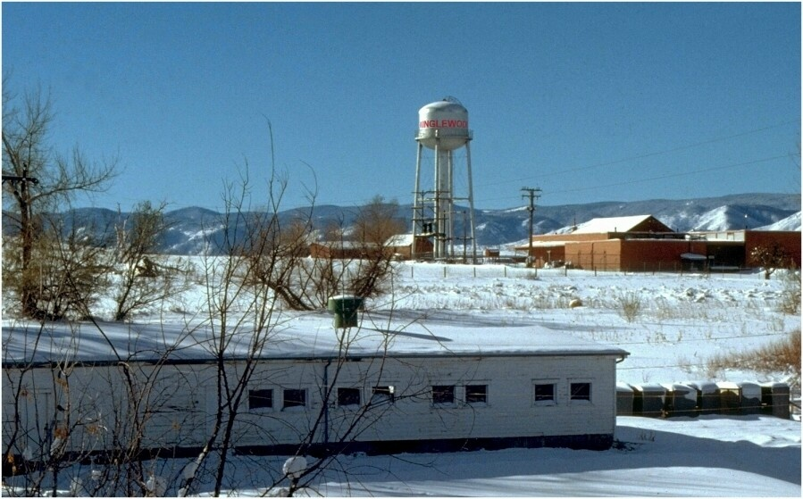

September 2001
[From Jim: Cindy and Kim have shared Junglewood Tales with their mother (Rosie), and I got this response from her:] I have seen the Junglewood Tales but have not yet had time to do more than skim. A lot of what's there is about people I never heard of, let alone met. But what a great idea! (By the way, you could add that the bowl-of-scraps-on-the-ceiling prank was played by your father with a visitor -- Benjie's friend, I think, but maybe Bill's -- named Ghaith. Don't ask me how I knew that; I couldn't tell you. But I was there.)
When I first read his name, Ghaith's last name came to my mind. Do you remember what it was? Armananza or something like that? He was one of the most interesting people I can remember meeting -- great ping pong player, could converse intelligently in a very broad array of subjects, and had an incredible sense of humor. One time, he put an image of an eye on the center of his forehead and wore it around for the whole day -- comical and a picture that will never leave my memory. I'll bet Dick remembers it well. He was very bright and great fun to be around.

The water tower with "JUNGLEWOOD" painted in red — best viewed from Wadsworth
Summer of 1967... This is a story about that big silver water tower that stood just west of Junglewood. It was so tall and massive that some people thought it was on Junglewood property. It looked like it was over 200' tall.
This story begins with one of those days that needed a little spark. One afternoon, as I was painting the bars on top of ol' #6 house (one of the nine greenhouses on the Junglewood property), my assistant, Marshal, happened to mention how huge the water tower, that stood immediately southwest of us, was. Its size indeed caught the attention of most everyone that entered the property. In fact many used it as a landmark for locating the property. But Marshal was right. The tank was huge - which I had taken for granted based on the fact that I lived there so long.
I responded to Marshal by telling him how I always thought it would be neat if that were Junglewood's tower and it had the word "Junglewood" printed on it. I remember Marshall turned to me and said, "We can take care of that!" with a funny little turn in one of his eyebrows. I turned and asked him if he was serious. The look on his face told me how serious he was and I knew it was only a matter of hours before the word "JUNGLEWOOD" would appear on the east side of that big ol' tank.
We started making plans immediately, because if it was going to happen, it had to happen that night. I think we were aware that excitement like this needed to be acted on quickly. We discussed a plan for the remainder of the work day. When we got off work we went straight to Bear Valley Hardware and bought a 25 foot roll of 20 inch wide shelf paper, some razor blades, a magic marker, 2 large cans of gloss red spray paint and a yard stick and then proceeded to Marshal's house to get our deed started. The suspense was starting to kill us.
Without going into all of engineering and construction detail, our end product, after two hours of hard work, produced a 15' wide stencil of the word Junglewood. Each letter was 2 inches wide - meaning the width of the line of the letter itself was 2 inches wide and each letter measuring about 10 to 12 inches across.
Well, we were ready, but the only problem was the time of day wasn't! It was only about 6:30pm in the middle of June. We needed to wait at least 3 hours for night-time to arrive before we could do start the fun part of the job. I remember thinking that this was exactly what we didn't need was time to think about what could go wrong.
The time finally came. We arrived at the base of tank on the Junglewood side of the fence 10' from the closest support with all of our equipment around 9:30. I remember laughing when Marshall asked if the tank had grown. It really appeared as if it had. It was bigger than we both had ever imagined.
I was looking to see where the ladder started when Marshal asked that very question. At that moment, I pointed and said "It starts right there... my finger was pointing at a spot on the nearest support leg of the tower and the bottom of the ladder started about 10 feet off the ground. We looked at each other wondering how we were going to get to that first rung. We knew we had another problem though. The property we were dealing with was owned by the state of Colorado. It was always referred to as the girls school and I always wondered why too, because it was actually a girl's prison. Anyway, our initial problem was the property was on constant roving patrol by an armed guard.
We sat and pondered our problems. After about 45 minutes we realized that this guard, that was driving a white pickup, repeated the same route over and over. At this point I could tell we were starting to get our confidence back. We decided to time the intervals as the guard passed the tank. As I remember, we had a little less than 3 minutes to climb the tower. We knew it would be close, but we also felt confident that we had enough time to get to the top. What we hadn't factored in was the trouble we would have getting to that first rung.
We waited a few more rounds by the guard and it was already decided, I was going first. As the guard passed, I took off and immediately jumped into the shadow of the 2-foot in diameter steel support straight below the ladder. I forgot to mention the "BIG" spot light shining right on the tower. It was our worst enemy. Anyway, here I am standing with two cans of paint taped to my back with three critical parts of our stencil. the centers of the 2 "O's" and the "D" stuffed in my back pocket. As I looked up at the first rung, I knew I could jump and grab it, I just wasn't sure how hard it would be from that point. All I knew was - I had to hurry!
I jumped up, grabbed the first rung and immediately kipped myself backwards to attach my knees to the first rung. It was all over as far as I was concerned because all I needed to do now was climb like a madman. When I stood up on the first rung, I looked down at Marshal and loudly whispered, "It's a little rough getting started!"
Anyway, I looked up and started climbing the ladder. The climb seemed endless, but I finally made it to the top! I remember having to climb over a locked gate at the top. I thought this was outrageous. Was there really a need to keep "all of us" pranksters out? How many of us were there? I was starting to feel very insignificant.
I had no idea how far up I was until I looked down. Whoa! Way down! In fact, it was so far down that I couldn't communicate with Marshal any more unless I yelled, which I'd never do.
As I stood at the top, I knew I could do nothing unless Marshal could make it. I started wondering if he could get situated on that first rung. As I looked down, I noticed that the guard had just driven by and Marshal had already started his run. I also noticed he was carrying something. He had found a wooden milk case to stand on. Great! but it was still taking him too long. Marshal didn't like the way I got up on the first rung. He was pulling himself up with his arms. The guard was due any second and he was still at the bottom. Right as I noticed Marshal had got himself situated on the first rung, the guard came around the corner of the building with his headlights pointed at the tower. My heart was pounding just watching his predicament. I could only imagine how fast his was beating as he clung motionless to the ladder waiting for the guard to pass. The lights of the truck and the towers. Spotlight had him in full view, but the guard drove right by. Whew!
Ok, this was the fun part! Marshal pulled the stencil out of his coat and then ripped the 2 paint cans from my back. This whole thing was starting to resemble a Mission Impossible episode with our little planned out chores. I held the rolled up stencil as high on the tank as I could while Marshal spray-painted. My right hand unrolled while my left hand (trailing about 18") rolled the stencil back up with Marshal painting between my arms... a little too cozy for normal circumstances but the idea never crossed our minds. This part of the adventure went so neat! In about five minutes, we had a perfect paint job.
I'll stop the story here because Mission Impossible was complete... no more bad guys or scary stuff (except Dad about a week later ... that's another story), just a great big silver tower that appeared to belong to "JUNGLEWOOD". It was viewed best from Wadsworth. What an adventure!
Here's a link to our finished job "Junglewood tower job". Credit for locating this picture goes to Dick - in more than one way.
Hey Dicky, Tell the story about Othello - or one of the other dogs (a big one!) that you used to take over to the restaurant across from the entrance to Junglewood - and feed him hamburgers at the front counter - much to the dismay of the objecting manager who was trying to get you to take the dog outside. I can't remember the name of the restaurant or the dog - or the approximate year this happened. Help me out with this one. I remember it being quite a funny story.
Benj, It was Eric, the black Great Dane dad got from one of DWF's flower growers. It was the summer of 1977. Sometimes after we would be out late at night with Peter or Dan Smilanich and others, we would stop at Denny's across Wadsworth from Junglewood to get something to eat!
One time when we got there, Eric was wandering around the front entrance introducing himself to everyone as they left. He was very calm and friendly, remember? I spoke to him and told him stay outside while we went in. I remember him sitting on the sidewalk looking in at us. He looked like he could sure use a hamburger right about then. So I ordered him one for the ride home.
Danny Smilanich was with us and there were others..., I'm not sure who? When the order came I thought Eric would really appreciate it if he could eat it right there off the plate! I looked outside and Eric was still sitting right where I told him. On an impulse I ran over to the door and waved Eric inside and over to our table! Boy was he ever excited! By the time he got to the table most everyone was watching him. Remember, Eric was huge! His head was even with your face when you were sitting. He saw my plate first. My favorite, open-faced turkey sandwich covered with gravy and mashed potatoes and dressing. Before I got to the table behind him it was GONE! By this time everyone else at the table was falling out of their seats laughing.
Eric was having the time of his life! After he cleaned my plate, and I mean CLEAN, Smilanich shoved his plate over to him. When I came up for another breath of air from laughter, his plate was GONE too! Now we got half the restaurant watching and laughing! The manager came over and asked whose dog? Smilanich said that's not a dog, that's Dick's horse! The manager said, well I guess you won't be needing a doggie bag. I said yea I think he might want to eat his hamburger at home! He should be getting a little full by now. WRONG, he took one look at that hamburger and went for it but I grabbed it first.
Everyone said, Dick let him have it! I thought OK but first I need to decorate it for him. Ketchup, mustard, pickles, tomatoes, lettuce, French fries, he loved it all! Plate licked CLEAN! Before we left I think 20 people came over to pet him. They were not used to seeing such a big dog. Particularly in Denny's cleaning tables!
Earlier in this chapter, Jimmy talks about a guy named Ghaith - a roommate of mine up at CU back in the years 1965 - 67. I believe Ghaith spelled his name, "GHAYTH". His last name was "ARMANAZI". He was the son of Syria's ambassador to the United Nations (whatever his name was, I don't recall).
Ghayth knew his history very well - especially the history of the Palestinians for the past 300-400 years. It was very hard for me to argue with him (which I frequently tried to do) - as he had many more facts at his fingertips than I ever had. Ghayth had a wonderful sense of humor and loved to come and visit the Haley family at Junglewood. Jimmy - you have a great memory! He was a great ping pong player - and as a student at CU, he excelled in his studies (a straight 4.0 student!), pursuing a double major in Economics and Political Science.
Researching Ghayth Armanazi on the Internet - some interesting facts about Ghayth can be found. He is a former Editor in Chief, Arabic Affairs in London, England. He has written: Syrian Policy at the Crossroads: The Dynamics and Exigencies of Realignment and Reassessment in the Post-Gulf War Era --- and now Head of Mission, League of Arab States Office in London, England. He's also been Arab League Ambassador in London.
I'm trying to run him down to see if he has an "email address". Wouldn't it be great to contact him again after all these years? I'm sure he'd love the picture Danny Patrick has of him with an eyeball picture pasted on his forehead. Maybe we could "post" it here on the Junglewood website?
Related to Ghayth Armanazi - here's another name well known to Junglewood - SAM ZAKHEM! (Many of you recall Sam Zakhem, I'm sure. He was from Lebanon. I was best man at his wedding back in 1966 or 67. I also believe most of the Ora B. Haley children came to know Sam Zakhem over the years.) Sam attended CU at the same time as Ghayth and I. He also was a frequent visitor to Junglewood!
Sam was the complete opposite of Ghayth Armanazi - politically. Sam loved the U.S.! In 1967 - Sam gave up his citizenship to Lebanon in order to stay in the U.S. and marry his bride-to-be, Marilyn. As many of you know, Sam went on to teach politics at Loretto Heights College (Dicky - I believe you were in one of his classes, weren't you?). From there, Sam became a member of the Colorado House of Representatives - representing the Republican party.
[After Benj submitted this story, I did a search and found Ghayth (a video!) on the internet. This was recorded a few weeks prior to the Sept. 11 tragedy. Click here to see it (I hope it's still there). --Ken]